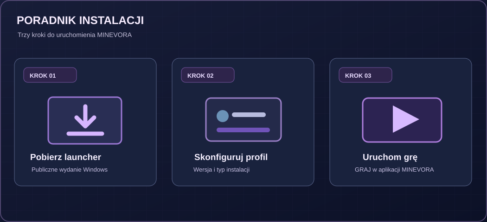
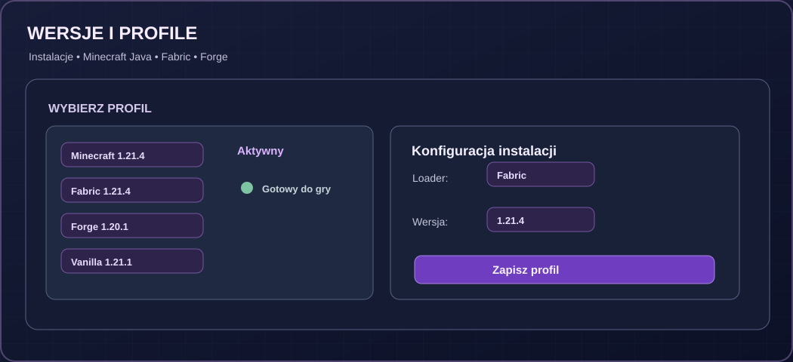
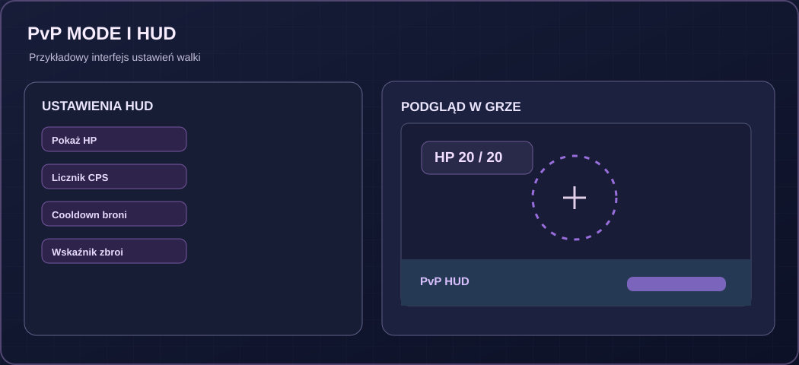
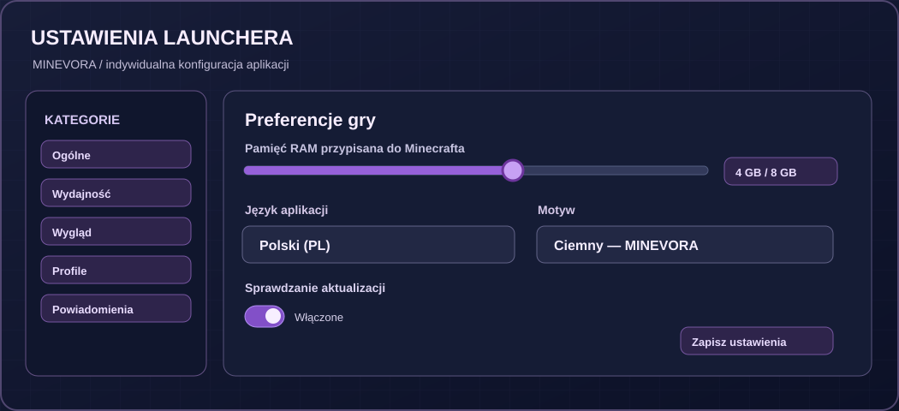

Pobierz paczkę
Przejdź do publicznego wydania na GitHub i sprawdź nazwę oraz źródło pliku ZIP.
Przejrzysty poradnik pierwszego uruchomienia, profili Minecraft Java i typowych błędów. Najważniejsze odpowiedzi znajdziesz również bez włączonego JavaScriptu.
Przygotowanie testowego wydania nie powinno wymagać obchodzenia zabezpieczeń Windows. Publicznie dostępny plik to ZIP około 6,4 MB, nie potwierdzony instalator EXE o rozmiarze 12 MB.
Przejdź do publicznego wydania na GitHub i sprawdź nazwę oraz źródło pliku ZIP.
Po sprawdzeniu bezpieczeństwa i kompatybilności skonfiguruj wersję gry i loader w aplikacji Windows.
W launcherze użyj przycisku GRAJ. Strona WWW sama nie uruchamia Minecrafta.
Ważne: nigdy nie wyłączaj Defendera ani Smart App Control na minutę tylko po to, by uruchomić program. Jeśli pojawia się ostrzeżenie, sprawdź źródło i integralność pliku, a gdy nie masz pewności — wstrzymaj instalację.

W otwartym launcherze wybierz profil Minecraft Java, wersję gry oraz zgodny typ instalacji — np. Vanilla, Fabric lub Forge — jeśli obsługuje je Twoje wydanie. Zanim uruchomisz grę, upewnij się, że wybrane dodatki są z nią zgodne.
Dokładna ścieżka zależy od wydania i konfiguracji programu. Sprawdź lokalizację w ustawieniach launchera lub profilu. Nie zakładamy, że folder %appdata%\.minevora istnieje w każdej wersji — nie zostało to potwierdzone dla publicznej paczki 18.3.4.

Do pełnej, licencjonowanej wersji Minecraft Java Edition wymagane jest uprawnienie do gry na koncie Microsoft. Nie potwierdziliśmy niezależnie działania logowania Microsoft w aktualnym publicznym wydaniu MINEVORA, dlatego nie obiecujemy, że każdy ekran i każda opcja będą działać identycznie.
Bezpieczeństwo konta: korzystaj wyłącznie ze zweryfikowanego przepływu logowania Microsoft. Nie podawaj hasła ani kodów jednorazowych w przypadkowych formularzach i nie przesyłaj ich obsłudze technicznej.
Jeżeli Twoja wersja MINEVORA ma konfigurację pamięci, znajdziesz ją w ustawieniach uruchamiania lub profilu. Zwiększaj przydział tylko wtedy, gdy gra rzeczywiście potrzebuje dodatkowej pamięci, i zostaw odpowiedni zapas dla Windows oraz innych programów.
Więcej RAM nie zawsze poprawia FPS. Problemy wydajności mogą wynikać także z ciężkich modów, ustawień graficznych i sterowników.
Jeżeli aplikacja nie startuje, pojawia się błąd Java, Exit Code 1 lub komunikat zabezpieczeń, nie instaluj losowych bibliotek z nieznanych źródeł. Zapisz dokładny kod błędu i przejdź do FAQ poniżej.


Przy zgłaszaniu problemu na GitHub Issues opisz wersję Windows, wydanie launchera, wersję Minecrafta, loader i widoczny komunikat. Usuń z logów tokeny, adresy e-mail i inne dane prywatne.
Publiczna strona wydania udostępnia plik ZIP i osobny plik z sumą SHA-256. Sama obecność repozytorium lub suma kontrolna nie są gwarancją bezpieczeństwa, ale mogą pomóc sprawdzić integralność pobranego archiwum.
Repozytorium jest publiczne, ale nie zweryfikowaliśmy licencji otwartego oprogramowania ani aktualnego raportu VirusTotal dla konkretnej sumy pliku. Nie zamieszczamy fikcyjnego skanu ani nie przedstawiamy niepotwierdzonego statusu jako gwarancji.
Kliknij pytanie, aby rozwinąć odpowiedź, lub użyj wyszukiwarki w spisie treści (Ctrl+K). Wszystkie odpowiedzi znajdują się bezpośrednio w HTML i są dostępne również bez JavaScriptu.
Najpierw sprawdź, czy pobrany plik pochodzi z oficjalnego wydania, czy archiwum ZIP zostało poprawnie rozpakowane i czy wydanie jest kompatybilne z Twoim systemem Windows. Zanotuj pełny komunikat błędu. Nie uruchamiaj niezweryfikowanych plików z wyłączoną ochroną systemu.
Jeżeli pojawia się kod błędu Windows, zapisz go w zgłoszeniu na GitHub Issues.
Exit Code 1 jest ogólnym kodem zakończenia procesu, nie diagnozą. Sprawdź logi gry, zgodność wersji Minecrafta, loadera i modów. Spróbuj uruchomić czysty profil bez dodatków oraz upewnij się, że wersja Java jest odpowiednia dla wybranego wydania gry.
Do zgłoszenia dołącz opis czynności i fragment dziennika bez prywatnych danych czy tokenów.
Nie wyłączaj Microsoft Defendera, Smart App Control ani innych zabezpieczeń. Wstrzymaj instalację. Zweryfikuj stronę wydania na GitHub, rozmiar pliku, udostępnioną sumę SHA-256 oraz informacje o podpisie cyfrowym. Ostrzeżenie może być fałszywym alarmem, ale nie można tego zakładać bez weryfikacji.
Jeśli źródło lub podpis budzi wątpliwości, nie uruchamiaj pliku i poproś wydawcę o wyjaśnienie.
Zweryfikowane publiczne wydanie 18.3.4 jest udostępnione jako archiwum ZIP o rozmiarze około 6,4 MB, a nie potwierdzony instalator EXE o rozmiarze 12 MB. Nie obiecujemy pliku EXE, którego nie ma w publicznej liście wydania.
Nie mamy potwierdzonej, jednakowej ścieżki dla wszystkich wersji MINEVORA. W aplikacji sprawdź ustawienia folderu gry lub profilu oraz położenie katalogu instalacji. Folder %appdata%\.minevora jest przykładową nazwą, niezweryfikowaną jako obowiązująca dla publicznej paczki.
W launcherze otwórz ustawienia profilu lub gry i poszukaj przydziału pamięci, jeśli ta opcja jest dostępna w Twojej wersji. Zmieniaj wartość ostrożnie, pozostawiając pamięć dla systemu. Nie zakładaj, że maksymalny przydział zapewni więcej FPS.
Repozytorium MINEVORA Launcher jest publiczne i zawiera materiały dotyczące wydań; opis repozytorium wspomina również o kodzie w archiwum ZIP. Nie potwierdzamy jednak licencji upoważniającej do swobodnego wykorzystania kodu — samo publiczne udostępnienie plików nie oznacza automatycznie licencji open source.
Do korzystania z pełnej, licencjonowanej wersji Minecraft Java Edition potrzebne jest odpowiednie uprawnienie do gry na koncie Microsoft. Działania ekranu logowania MINEVORA nie zostały tutaj niezależnie potwierdzone. Nie wpisuj hasła Microsoft w nieznane okienka ani nie wysyłaj go innym osobom.
Nie mamy zweryfikowanego, aktualnego raportu VirusTotal przypisanego do tego konkretnego pliku. Nie zamieszczamy więc przypadkowego wyniku ani pustego osadzenia. Przed publikacją raportu należy upewnić się, że odpowiada sumie SHA-256 rzeczywiście udostępnionej paczki.
Obsługa loaderów i automatyczne pobieranie modów zależą od wydania launchera oraz zgodności konkretnego moda. Wybierz profil i upewnij się, że wersja gry, loader i mod odpowiadają sobie. Nie wszystkie mody działają na wszystkich wersjach Minecrafta.